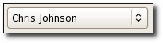

| Top |
GdauiComboGdauiCombo — Combo box to choose from the contents of a GdaDataModel |
 |
| GtkWidget * | gdaui_combo_new () |
| GtkWidget * | gdaui_combo_new_with_model () |
| void | gdaui_combo_set_model () |
| void | gdaui_combo_add_null () |
| gboolean | gdaui_combo_is_null_selected () |
GObject ╰── GInitiallyUnowned ╰── GtkWidget ╰── GtkContainer ╰── GtkBin ╰── GtkComboBox ╰── GdauiCombo ╰── GdauiProviderSelector
GdauiCombo implements AtkImplementorIface, GtkBuildable, GtkCellLayout, GtkCellEditable and GdauiDataSelector.
GtkWidget * gdaui_combo_new_with_model (GdaDataModel *model,gint n_cols,gint *cols_index);
Create a new GdauiCombo widget with a model. See gdaui_combo_set_model() for
more information about the n_cols
and cols_index
usage.
model |
a GdaDataModel object. |
|
n_cols |
number of columns in the model to be shown |
|
cols_index |
an array of columns to be shown, its size must be |
Since: 4.2
void gdaui_combo_set_model (GdauiCombo *combo,GdaDataModel *model,gint n_cols,gint *cols_index);
gdaui_combo_set_model has been deprecated since version 5.2 and should not be used in newly-written code.
Makes combo
display data stored in model
(makes the
combo widget refresh its list of values and display the values contained
in the model). A NULL model
will make the combo empty
and disassociate the previous model, if any.
if n_cols
is 0, then all the columns of model
will be displayed in combo
.
[skip]
combo |
a GdauiCombo widget. |
|
model |
a GdaDataModel object. |
|
n_cols |
number of columns in the model to be shown |
|
cols_index |
an array of columns to be shown, its size must be |
[array length=n_cols] |
Since: 4.2
void gdaui_combo_add_null (GdauiCombo *combo,gboolean add_null);
Tells if combo
should add a special entry representing an "undefined choice", as a NULL entry. The default is
that only the available choices in combo
's model are presented.
Since: 4.2
gboolean
gdaui_combo_is_null_selected (GdauiCombo *combo);
Tell if the currently selected entry represents the "undefined choice" entry.
Since: 4.2
“as-list” property“as-list” gboolean
Owner: GdauiCombo
Flags: Read / Write
Default value: FALSE